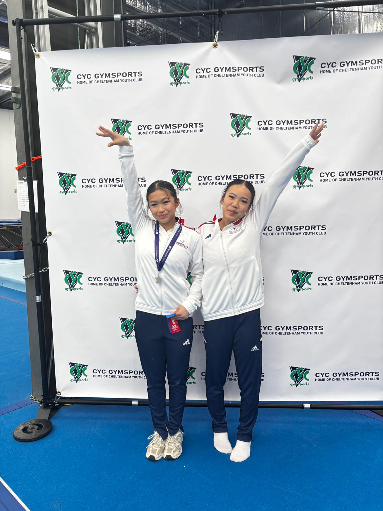
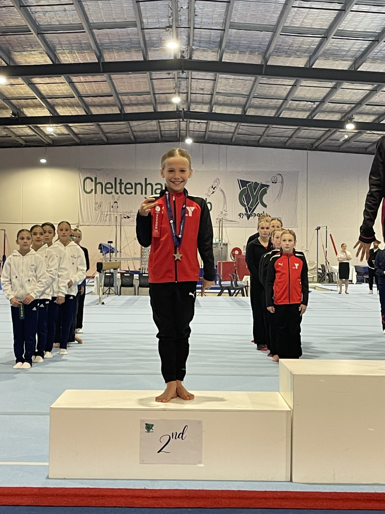
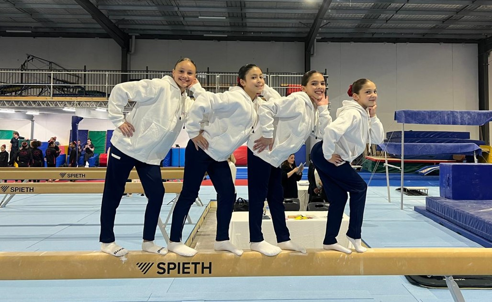

TL;DR
Arianna Nadiu (Melbourne Acrobatic Gymnastics Academy) won Level 7 by just 0.034 points at WAG Trial 2 and Border Challenge Trial 2, while Sophie Strano (Jets) led a competitive Level 8 Division 1 field with 47.332. Emma Hale's 13.033 on bars was the standout individual performance of the competition.
Level 7 at WAG Trial 2 came down to the last calculation. Arianna Nadiu from Melbourne Acrobatic Gymnastics Academy topped the all-around standings with 47.199, but Edwina Cross of Geelong YMCA was right behind her at 47.165 - a gap of just 0.034. Four events, four apparatus scores, and everything came down to 34 thousandths of a point.
Cross had actually held the edge on beam, where her 12.4 was the highest score on the apparatus in the division. But Nadiu's consistency across all four pieces - 11.7 vault, 12.1 bars, 11.833 beam, 11.566 floor - left no room to catch. Kristen Canoy from MLC rounded out the podium in third with 46.366, her 12.2 floor the strongest on that apparatus in the division.
Geelong YMCA had four athletes across the Level 7 field. Alongside Cross (2nd, 47.165), Augustine Vieau placed 10th equal (44.298) on the strength of 11.966 bars, Lexi Bates was 16th (43.465), and Emily Shepherdson 18th equal (43.099).
Jets' Sophie Strano took Level 8 Division 1 with 47.332. Her 13.0 on vault was the highest vault score in the division and set the tone from the opening rotation. Strano also placed second on floor (12.133) to add to a complete performance across all four events.
Waverley's Celine Wawolangi finished second overall (47.032) with her best work on beam - a 12.366 that was the third-highest on that apparatus in the division. Tiffany Clarke from MYC was third with 46.465, anchored by the division's highest bars score of 12.533.
Elisha Spiteri of Niddrie posted the highest vault score in the entire competition - 13.166 - but a 9.933 on beam left her fourth with 46.199, a reminder of how much a single apparatus can shift the final standings at this level. Morgan Ferguson (MLC, 7th, 45.599) and Ruby Nguyen (Cheltenham Youth Club, 9th, 44.998) were the other standouts in the top ten, each posting bars scores above 12.6.
Waverley's coaching staff noted that their athletes had shown "resilience and determination, with new ungraded skills competed well under pressure" - a nod to the risk some gymnasts took in putting new difficulty out at a trial.

Waverley athletes at the CYC Gymsports venue. Photo: Waverley Gymnastics Centre
Level 8 Unders - Border Challenge
Emma Hale from MLC produced the standout individual performance of the entire competition on the uneven bars - a 13.033 that would have topped the bars standings in any division on the day. Her all-around of 47.265 was a comfortable win in the Level 8 Unders field, with vault (12.233) providing her second-best apparatus score.
Geelong YMCA's Ivy Alford was second with 46.832 - her own bars score of 12.733 making this the highest-quality bars event of the competition. MAG Academy's Isla Bellamy rounded out the Border Challenge Unders podium in third with 45.231.
Geelong YMCA described their squad's performances as showing "fantastic resilience, determination and composure" across the weekend, with team selections still to be announced.

A Geelong YMCA athlete on the podium at CYC Gymsports. Photo: Geelong YMCA Gymnastics
Level 8 Division 2
Division 2 ran across two sessions. In Session 3, Niddrie's Piper Cheswick won with 44.265, her 11.7 on floor and 11.233 on beam the standout scores. Kalani Coates of Geelong YMCA placed second (42.799), and Lexi Williams (MLC) third (42.199).
Session 4 saw Audrey Young of BUGS take the honours with 44.232, led by an 11.933 on beam - the strongest beam score across the two Division 2 sessions. Mia Anderson from Cheltenham Youth Club was second (43.765), followed by Chloe Drakopoulos of Pulse (43.032).
Teams
The Level 8 Division 1 team competition went to MLC with a dominant 139.33, ahead of BTYC (135.73) and MYC (135.53). Geelong YMCA placed sixth (124.43) - their team beam aggregate of 34.099 was second only to MLC - but gaps on bars and vault left them off the podium.

Waverley's squad at CYC Gymsports ahead of competition. Photo: Waverley Gymnastics Centre
Full All-Around Results
Level 7 Division 1 - Top 10
#
Athlete
Club
VT
UB
BB
FX
Total
1
Arianna Nadiu
MAG Academy
11.700
12.100
11.833
11.566
47.199
2
Edwina Cross
Geelong YMCA
11.566
11.533
12.400
11.666
47.165
3
Kristen Canoy
MLC
11.633
11.700
10.833
12.200
46.366
4
Indigo Gration
MAG Academy
11.366
11.666
11.433
11.766
46.231
5
Layla Fairweather
Chamford
11.833
11.066
10.833
11.433
45.165
6
Mia Bell
Chamford
11.000
9.700
12.566
11.866
45.132
7
Cora Turski
Chamford
10.966
11.166
11.366
11.466
44.964
8
Ruby De Sensi
Waverley
11.766
10.800
10.833
11.500
44.899
9
Rosie Varney
MLC
10.800
11.700
10.900
11.400
44.800
10=
Augustine Vieau
Geelong YMCA
10.566
11.966
11.000
10.766
44.298
10=
Lottie Studer
MAG Academy
11.033
10.766
11.266
11.233
44.298
Level 8 Division 1 - Top 10
#
Athlete
Club
VT
UB
BB
FX
Total
1
Sophie Strano
Jets
13.000
11.466
10.733
12.133
47.332
2
Celine Wawolangi
Waverley
12.400
10.366
12.366
11.900
47.032
3
Tiffany Clarke
MYC
11.566
12.533
10.733
11.633
46.465
4
Elisha Spiteri
Niddrie
13.166
11.800
9.933
11.300
46.199
5
Chloe Hume
Wyndham
12.800
11.333
10.766
11.000
45.899
6
Lexi Wise
MLC
11.366
11.800
11.466
11.166
45.798
7
Morgan Ferguson
MLC
11.466
12.600
9.933
11.600
45.599
8
Karina Hanieva
MYC
12.500
11.300
10.466
11.233
45.499
9
Ruby Nguyen
CYC
11.466
12.633
11.366
9.533
44.998
10
Skylar Poliquit
MAG Academy
11.900
10.533
11.200
11.266
44.899
Level 8 Unders - Full Results
#
Athlete
Club
VT
UB
BB
FX
Total
1
Emma Hale
MLC
12.233
13.033
10.933
11.066
47.265
2
Ivy Alford
Geelong YMCA
11.200
12.733
11.433
11.466
46.832
3
Isla Bellamy
MAG Academy
12.233
10.766
10.866
11.366
45.231
4
Lexi O'Brien
MYC
10.933
11.433
10.233
9.966
42.565
5
Ailani Songsaeng
Geelong YMCA
11.100
7.500
11.366
11.133
41.099
Level 8 Division 1 Teams
#
Club
VT
UB
BB
FX
Total
1
MLC
35.332
37.433
32.699
33.866
139.330
2
BTYC
36.566
34.466
30.699
33.999
135.730
3
MYC
35.599
35.299
31.432
33.199
135.529
4
Niddrie
36.866
31.399
31.066
32.333
131.664
5
Melbourne Gymnastics Centre
36.232
31.866
28.566
32.432
129.096
6
Geelong YMCA
33.466
26.133
34.099
30.732
124.430
About the Author
David "Tonko" Tonkin
Founder, Stick The Landing · Gymnastics Dad
David Tonkin ("Tonko" to those who've known him long enough) is a former MAG gymnast turned Ballroom Dancer turned Gymnastics Dad. Gymnastics runs in the family: his mother coached and judged the sport, and his sister was a Rhythmic Gymnastics Australian Champion. Today his own daughter trains close to twenty hours a week in competitive WAG. He built Stick The Landing to give the Victorian gymnastics community the results tool it deserved.